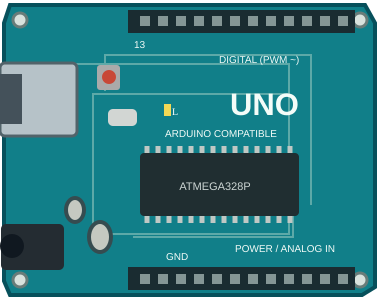
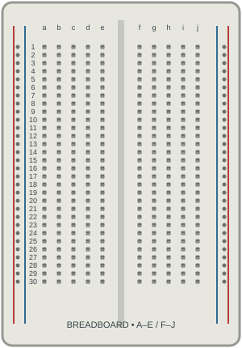
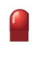
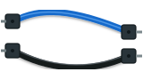

قبل از شروع، قطعهها را بشناس
شکل هر قطعه و نشانهای که باید روی آن پیدا کنی اینجاست. قطعهها را با تصویر مقایسه کن.

Arduino Uno
برد اصلی که کد را اجرا میکند.
ردیف پینهای دیجیتال و نوشتهٔ D13 را پیدا کن.
قطعهٔ اصلی همین مدار
بردبرد
مدار را بدون لحیمکاری روی آن میسازیم.
حروف A تا E و شمارهٔ ردیفها را کنار سوراخها ببین.
قطعهٔ اصلی همین مدار
LED قرمز
چراغ قرمز مدار؛ جهت پایههایش مهم است.
پایهٔ بلندتر آند (+) و پایهٔ کوتاهتر کاتد (−) است.
قطعهٔ اصلی همین مدارمقاومت 330 اهم
مقاومت ۳۳۰ اهم جریان LED را محدود میکند.
نوارهای نارنجی، نارنجی، قهوهای و طلایی را پیدا کن.
قطعهٔ اصلی همین مدار
سیمهای جامپر
دو سیم جامپر مسیر فرمان و زمین را میسازند.
هر دو سر سیم باید پین نری سالم و صاف داشته باشد.
2 سیم موردنیاز برای ساخت مدار